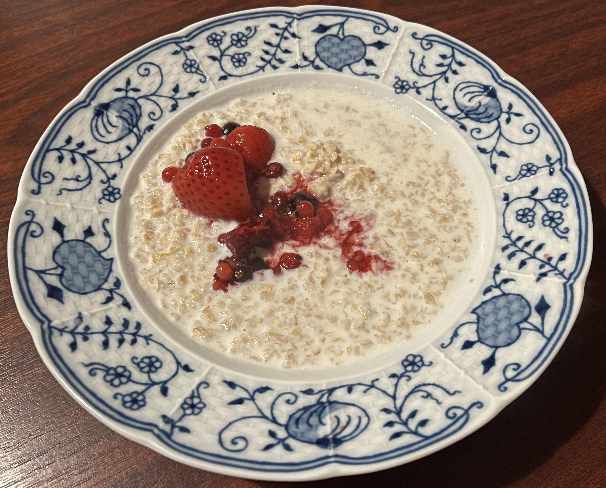

Description
A simple, quick and affordable oatmeal porridge with cottage cheese and dark chocolate.
Ingredients
Required
- 30 g oats
- 165 ml fresh milk
- 1 square (12.5 g) of dark chocolate (70% cocoa or more). Tip: Keep the chocolate square whole; do not break it apart.
- 38 g cottage cheese (curd-style)
If you weigh all your ingredients, you can avoid food waste.
Optional
- Nuts, fresh fruit or frozen fruit, according to your taste.
Steps
- Put the milk and oats into a small saucepan. Stir, place over low heat, add a pinch of salt and cook until the milk is almost boiling.
- Remove the saucepan from the heat. Place the porridge on a plate with the cottage cheese, add the dark chocolate and any additional toppings you like.
Enjoy your meal!
Score
Fresh milk (165 ml): 20 × 0.165 = 3.3 CZK
Dark chocolate (12.5 g): 57 / 10 = 5.7 CZK
Oats (30 g): 20 × 0.03 = 0.6 CZK
Cottage cheese (38 g): 30 / 6 = 5 CZK
Total: 15 CZK
Price per portion in eur
1
2
3
4
5
Preparation time in min
10
20
30
40
50
Health rating
A
B
C
D
E